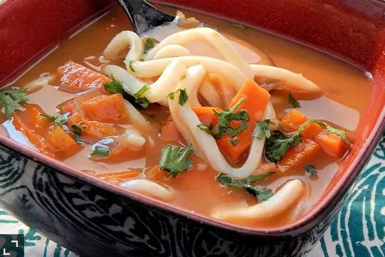

Recipe:Odin's Udon
Naruto would approve of this one!

Ingredients
- Noodles
- Salt
- Pepper
- Broth
- Scallions
- Optional:Chicken Bones
Steps
- Bring two cups of water to boil.
- Add salt and seasoning is to water. (Bonus Points if you have chicken bones for added flavor.)
- Lower pot to a simmer and leave pot on stove for 1 hour.
- Add noodles to pot and boil for 10 minutes.
- Remove from fire and serve.
Eat!
Hey, you've worked so hard to get this done. Now rest and enjoy your new Udon dish. You have made Odin so proud!